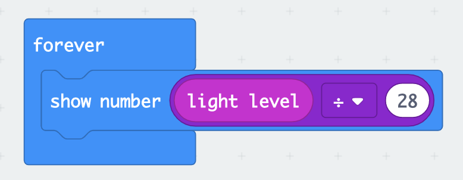

In this week's class exercise, we explored the use of p5 coding with micros bit. the tilting motion, the shaking motion on the micro bit can be used to trigger the start of a video as well as to stop the video.
We find this very applicable to our own project.
In the series of the picture above, it depicts how we can use p5 to code sliders to tune the colour of an led that is being connected to a micro bit
After last week’s micro bit exploration we realise that for our project to work we need to have 3 different external light sensor for the trigger, using the microbit itself will not be sufficient to detect 3 bottles.
Therefore, this week we explored external light sensor that is able to connect to micro bit to trace light intensity from the environment.
We tested out the and it works, micro bit’s device stimulator shows the list of light intensity values when the can is being lifted and being placed on the light sensor. Below is some screen shots of the values changes over time.
From looking at the list values, we can see that it corresponds to the light intensity of the environment. When the can is being lifted from the light sensor, the light detects the value to be more than 300 and when the can is being placed on the light detector the value is less than 50. From here we then deduced the value that is required to trigger the output. These values will be a reference for us later in the project.
For our weekly assignment, we created a state transition diagram to better illustrate our idea. Our concept is the flavour experience, and we wanted to leverage on digital transformation to crreate moods that depict the flavours of drinks.

Next week: How can we apply these values to make our project work?